mailbench concepts
Three layouts, each with an inbox, a reader, a composer, an empty state and an error state. Recommendation: A as the shell, with B's conversation view as its reader and C's triage queue as a mode.
A three pane: best for scanning many accounts
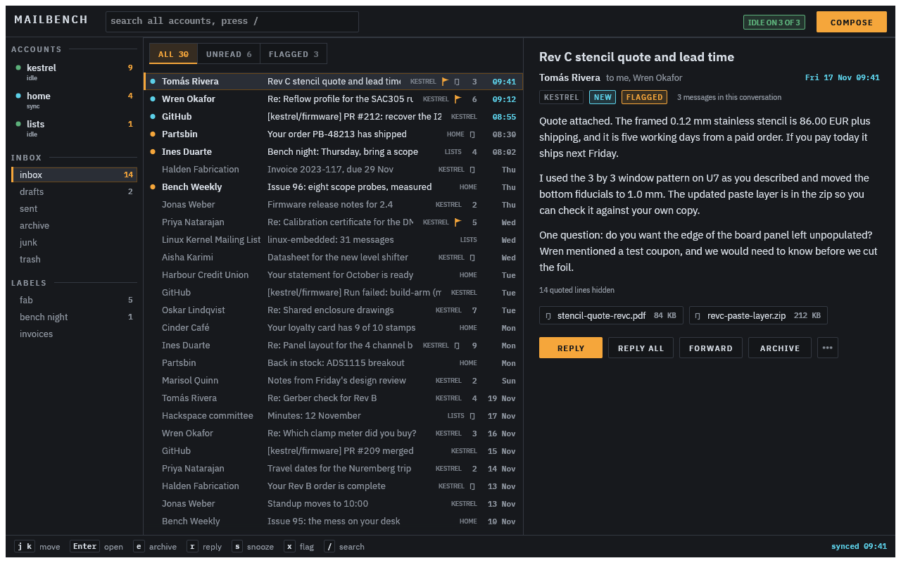
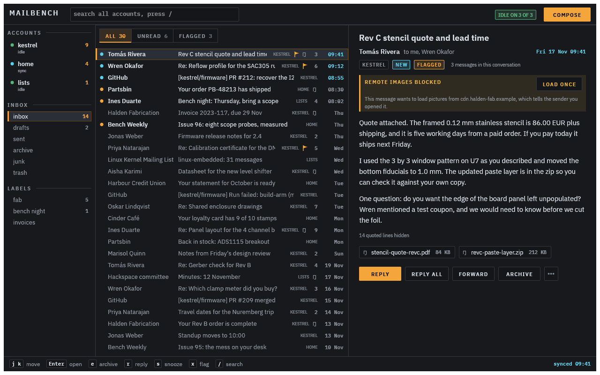
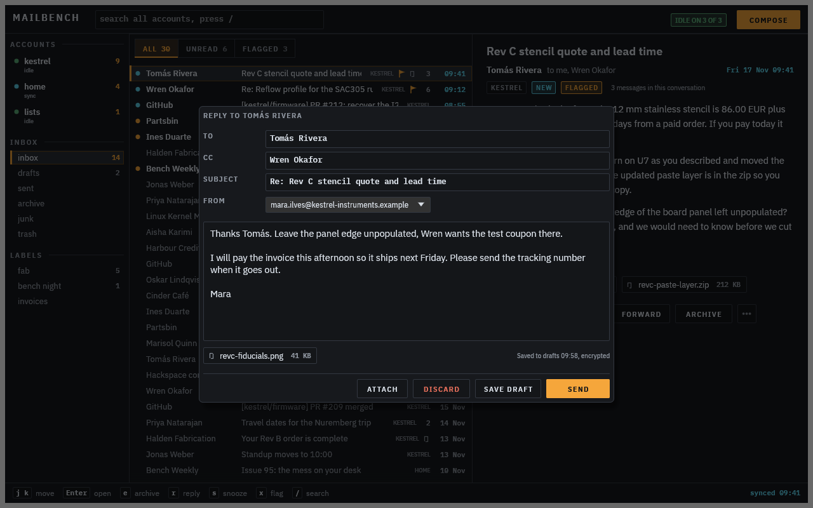
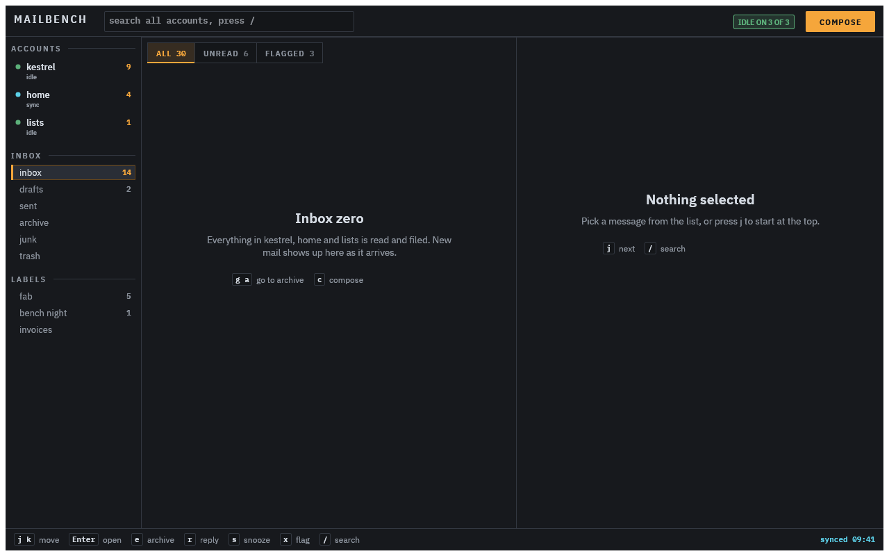
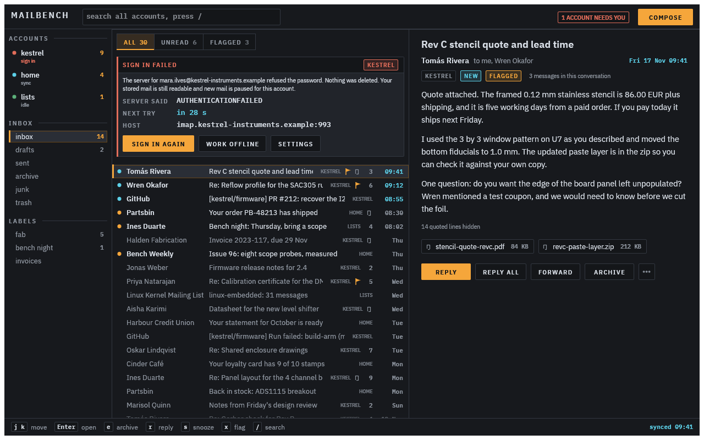
B conversations: best for long threads, reply in place
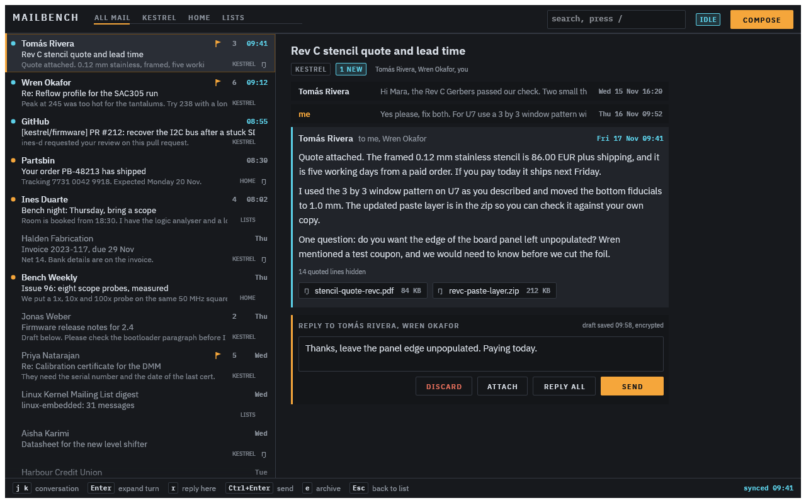
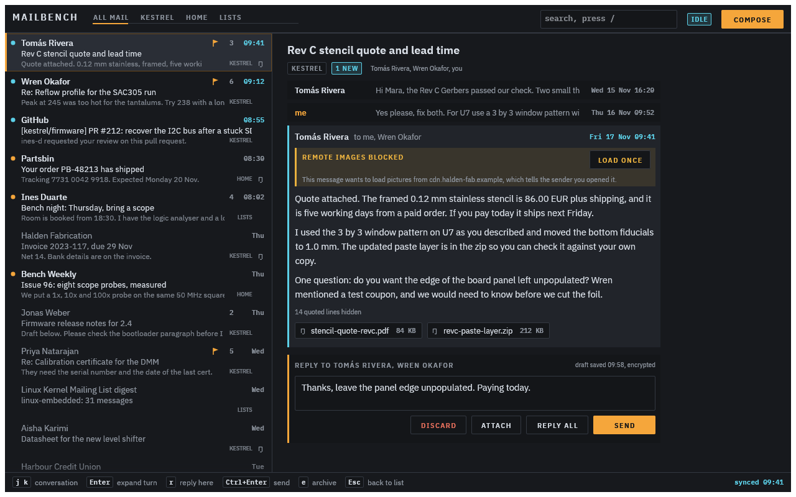
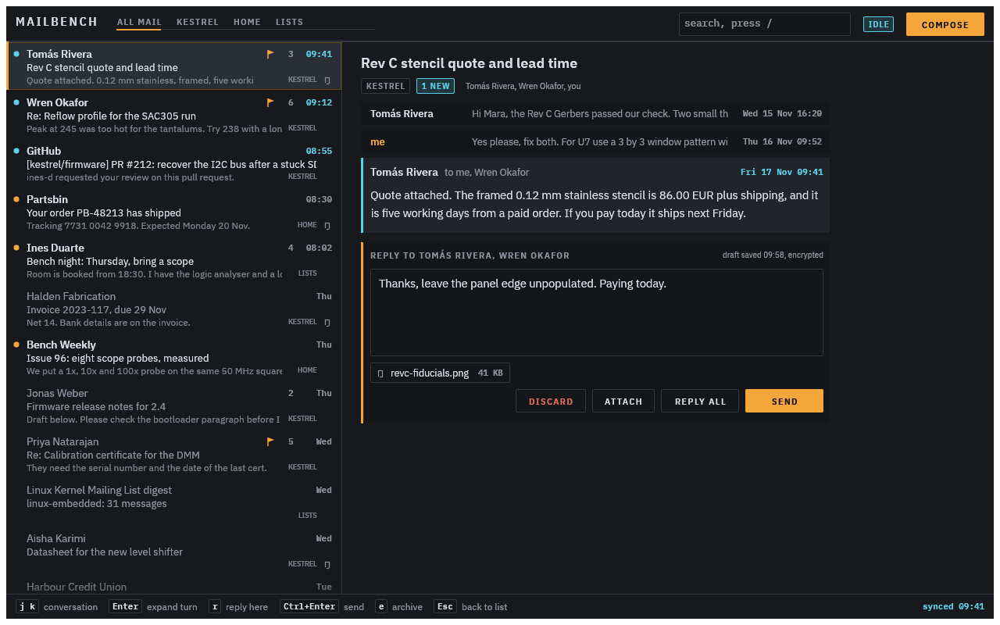
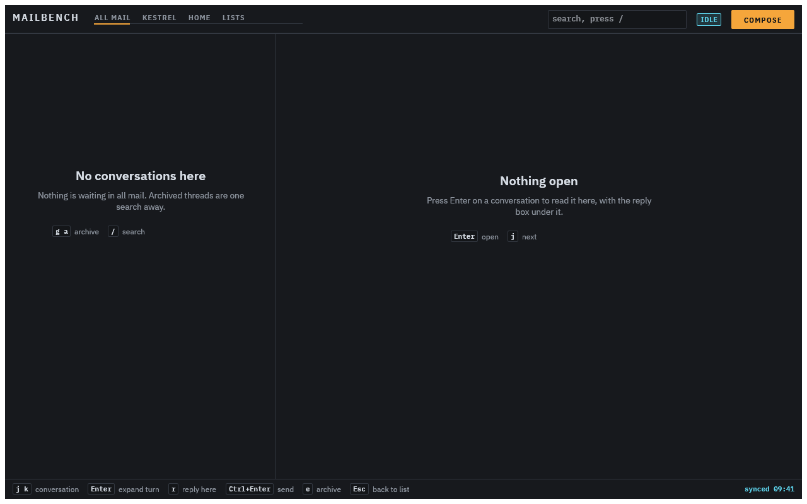
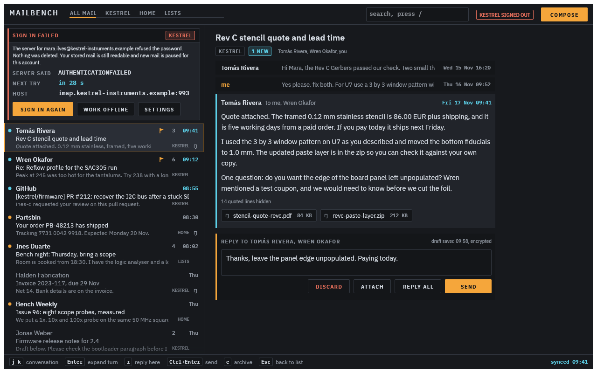
C triage: best for getting to zero by keyboard
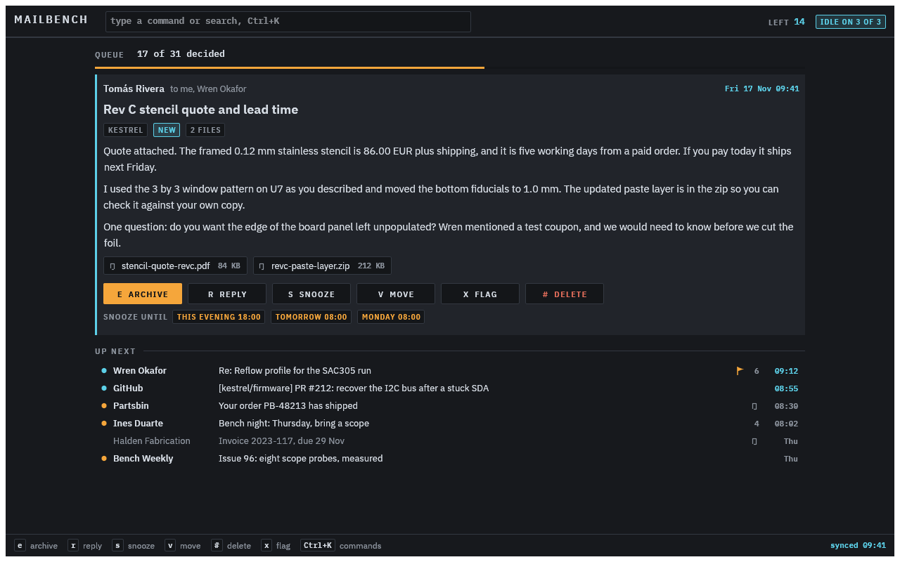
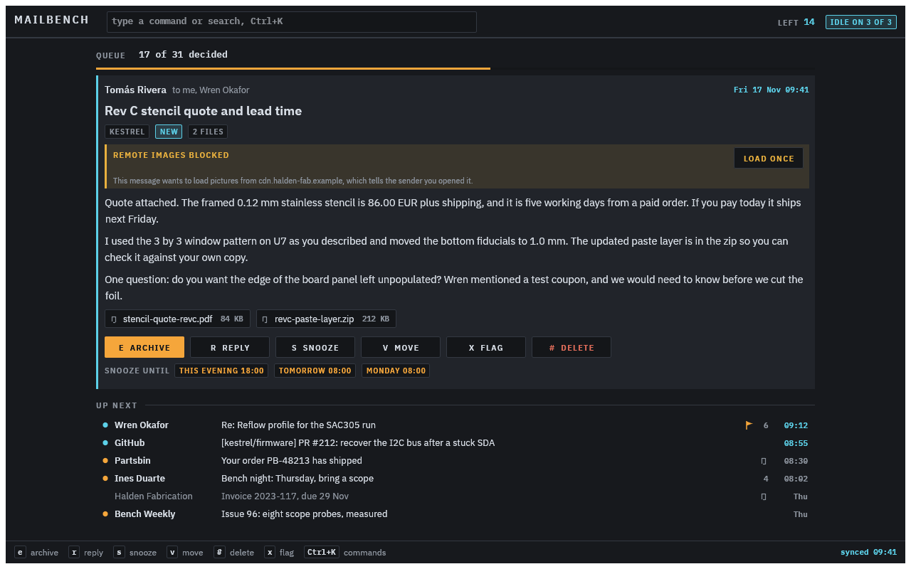
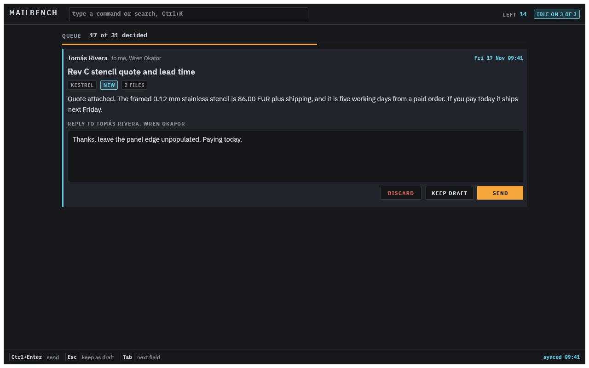
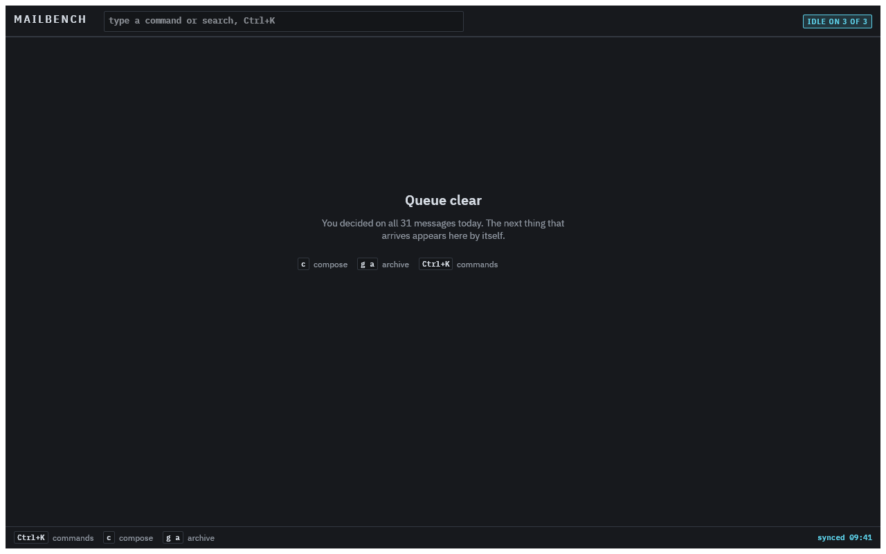
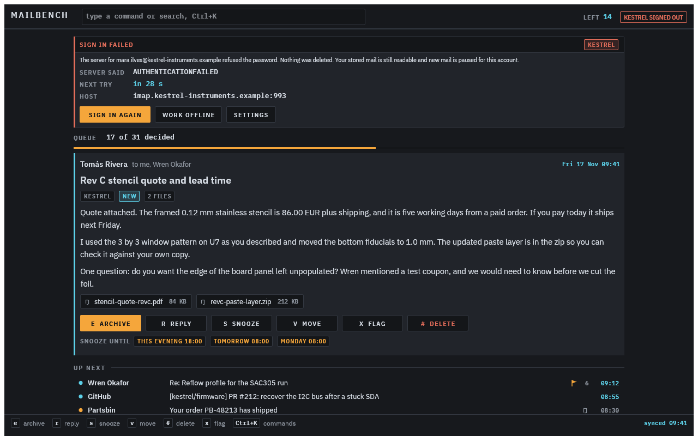